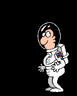

¡Inténtalo de nuevo!
La velocidad de la nave no debe superar los 5 metros/segundo
Intentos realizados: 0
¡¡¡ENHORABUENA!!!
La NASA estaría orgullosa de contar con pilotos como tú...

INSTRUCCIONES
El juego consiste en frenar la caída de la nave mediante el uso del motor, utiliza la tecla espacio o el botón ON para la version smartphone, para que esta pueda aterrizar adecuadamente sobre la superficie lunar.
Si el jugador no frena lo suficientemente la caída de la nave ,a una velocidad inferior a los 5 m/s, esta se estrellará y el jugador no superará el juego.
Además hay que tener en cuenta que la nave cuenta con un medidor de gasolina que se acabará si el jugador abusa del uso del motor de la nave.
AJUSTES
Dificultad del juego:
(Disminuye el depósito de gasolina)